Skip to navigation
Skip to content
Search
Search Keywords
College of Liberal Arts and Social Sciences
The Halliday Centre for Intelligent Applications of Language Studies
韓禮德語言研究智能應用中心
About Us
Introduction
Vision & Mission
M.A.K Halliday
A brief biography
M.A.K. Halliday Memorial
Ruqaiya Hasan Memorial
Location
People
Alex Fang, Centre Director
Jonathan Webster, Centre Advisor
Steering Committee
Core Members
Affiliated Members
Staff
Associated PhD Students
Research Areas
Linguistics
Translation
Natural Language Processing
Publications
Recent Publications
Books
Authored Books
Edited Books
Translated Books
Book Chapters
Conference Proceedings
Journal Articles
Collected Works
M.A.K. Halliday
Ruqaiya Hasan
Braj B. Kachru
Other Publications
Research Projects
On-going Projects
Completed Projects
Resources
Partner Centres
Partner Journals
Other Resources and Tools
News & Events
Recent News
Previous Events
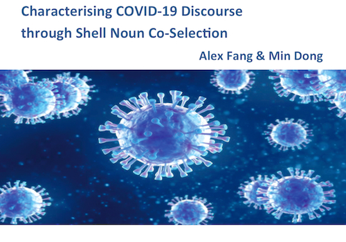
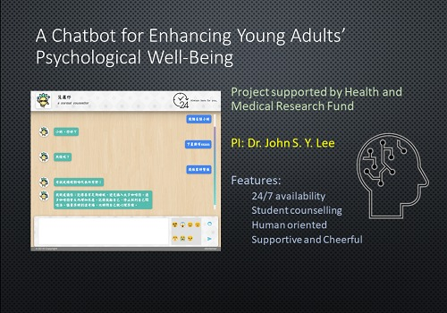
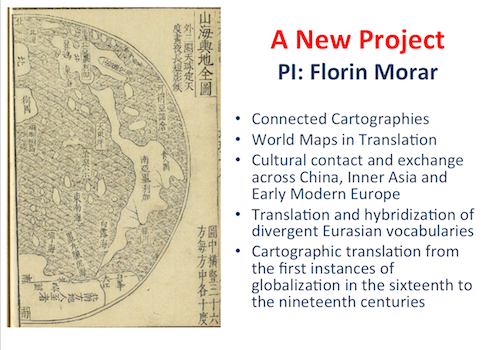
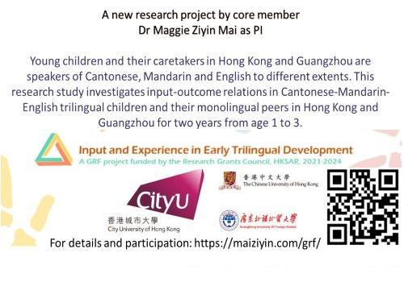
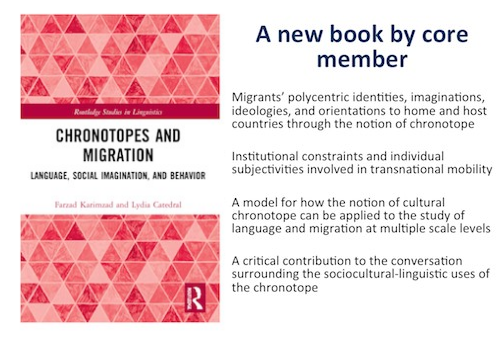
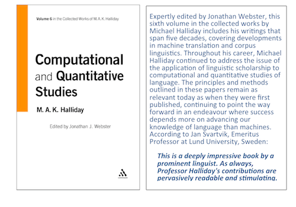
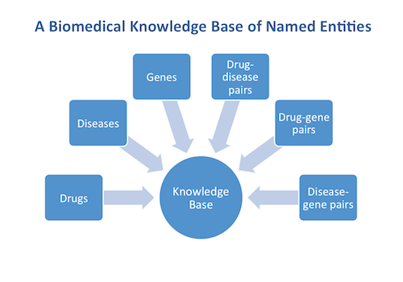
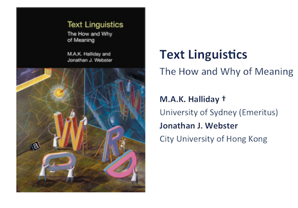
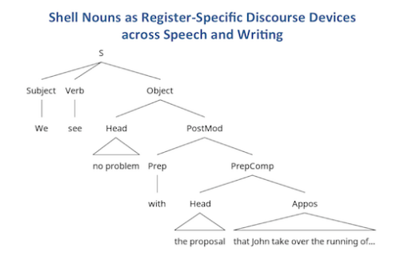
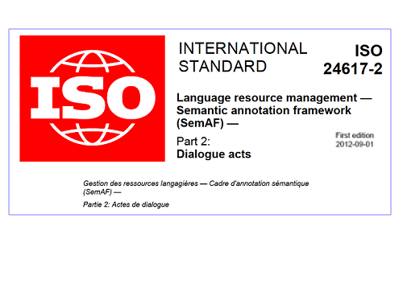
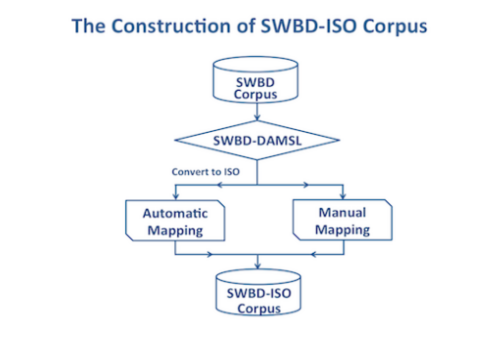
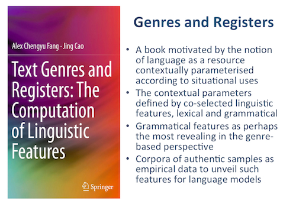
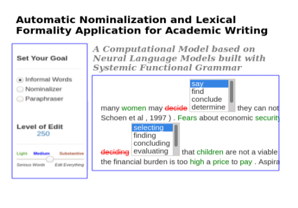
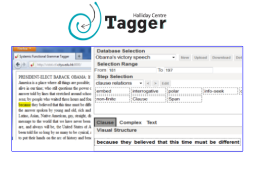
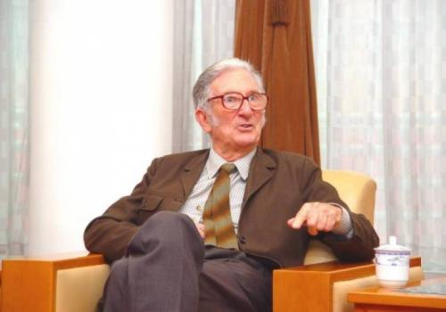
New Publications
New
Li, L., Tian, J., Zhang, Q. & Zhou, J.
2021
.
Influence of content and creator characteristics on sharing disaster-related information on social media
. Information & Management. 58, 5, 103489
John S. Y. Lee & Chak Yan Yeung.
2021
.
Assisted discovery-based learning for literature studies.
Innovations in Education and Teaching International.
Mai, Z., Zhao, L., & Yip, V.
2021
.
The Mandarin ba-construction in school-age heritage speakers and their parental input.
Linguistic Approaches to Bilingualism.
Karimzad, F., & Catedral, L.
2021
.
Chronotopes and Migration: Language, Social Imagination, and Behavior.
New York: Routledge
Fang, A. C. & Dong, M.,
2021
,
Shell nouns as register-specific discourse devices.
In : International Journal of Corpus Linguistics.
Publications
New Projects
New
Qingpeng Zhang. A Big Data Predictive Decision System for COVID-19 Epidemic in Hong Kong
Florin Morar. Connected Cartographies: World Maps in Translation between China, Inner Asia and Early Modern Europe
Lydia Catedral. "Public" or "Private" Labor? A Discourse Analytic Comparison of Regulations on Women’s Transnational Domestic Work.
John Lee. Semantic Modeling for Sentence-level Readability Assessment.
Maggie Mai. Input and Experience in Early Trilingual Development.
Jackie Yan. Integrating audio description training into interpreting classes: Research and practice.
John Lee. CityPal: A Chatbot for Enhancing Young Adults' Psychological Well-Being.
Partner Centres
News & Events
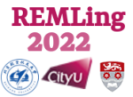
Upcoming Event: REMLing 2022
A Hongkong-Beijing-Lancaster Symposium on Research Methodologies for PhD Studies in Linguistics
7 September 2021
Elena Semino joined the Halliday Centre as Affiliated Member. She is Professor of Linguistics and Verbal Art and Director of ESRC Centre for Corpus Approaches to Social Science at Lancaster University.
22 August 2021
The Steering Committee of HCLS met and heard the Director's report on the latest developments. The committee endorsed the Centre's latest efforts to build a critical mass of expertise of core and affiliated members, grant applications to BHUA and SPPR, and international collaborations and fund raising activities. The committee endorsed healthcare language and communication as a strategic area of development for the centre and advised on imminent funding opportunities. The Steering Committee is chaired by Christine (CityU) and convened by Alex with Gerhard (Vienna) and Harry (Tilburg) as members. Jonathan as the Centre Advisor was also present at the meeting and spoke on strategic developments.
18 August 2021
Alex met with Prof Elena Semino, Director of the ESRC Center for Corpus Approaches to Social Sciences of Lancaster University, UK. Prof Jonathan Culpeper (HoD of Linguistics and English Language, Lancaster), Prof Richard Walker (Dean, College of Liberal Arts and Social Sciences, CityU) and Prof Christine Huang (Associate Dean, College of Liberal Arts and Social Sciences, CityU) were also at the meeting to discuss collaborations between the two research centres.
12 August 2021
Christoph Hafner joined the Halliday Centre as Core Member. He is Associate Professor in the Department of English at City University of Hong Kong.
26 July 2021
Ji Won Kim joined the Halliday Centre as Core Member. She is Assistant Professor in the Department of Media and Communication at City University of Hong Kong.
23 July 2021
Christine Yi-Hui Huang joined the Halliday Centre as Core Member. Christine is Chair Professor of Communication and Media and Associate Dean for Faculty and Research at College of Liberal Arts and Social Sciences, City University of Hong Kong.
Follow us on Twitter